|
|
HELP FIND THE FOLLOWING LOCATIONS
PAGE 13
Straker’s Car ShotsUnknown 1
U.F.O.: The Responsibility Seat (Alan Perry: September 1969)
Starker leaves studio - "t's my mistake, I'll take care of it."
Various shots of Ed Straker driving to and from
S.H.A.D.O. HQ.
U.F.O.: Close Up - Shot seen twice, reversed on the way back
UFO: Court Martial (Ron Appleton: October 1969)
UFO: Survival
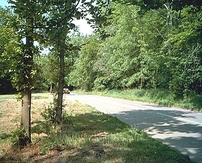 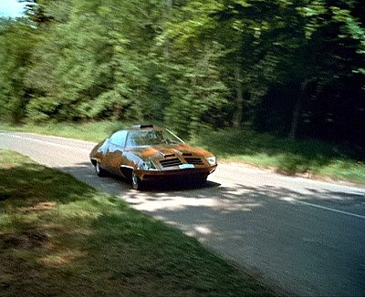 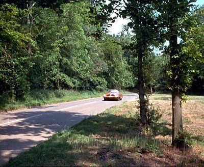
 James Webster - "I am pretty sure
is the top of Tom's Hill Road where the road levels off after climbing up the
hill from Aldbury
(Herts),
the clearing in the shots in now a sort of makeshift
car park for dog walkers etc.."
James Webster - "I am pretty sure
is the top of Tom's Hill Road where the road levels off after climbing up the
hill from Aldbury
(Herts),
the clearing in the shots in now a sort of makeshift
car park for dog walkers etc.."
Unknown 2
UFO: A
Question of Priorities (David Lane: August 1969)
Straker
follows Ambulance
to hospital after his son’s accident.
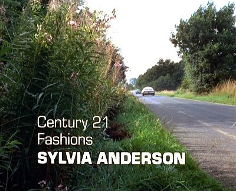 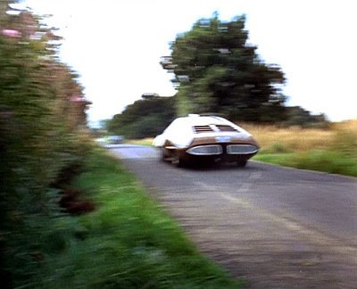 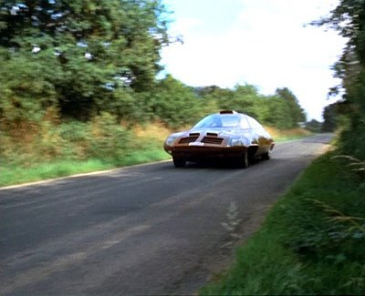 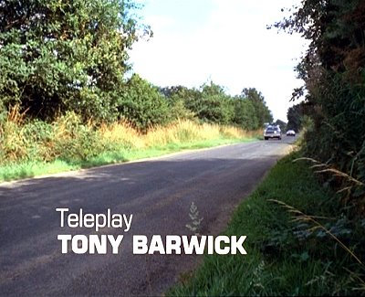
U.F.O.: The Responsibility Seat (Alan Perry: September 1969)
Various shots of Ed Straker driving to and from
S.H.A.D.O. HQ. (reversed)
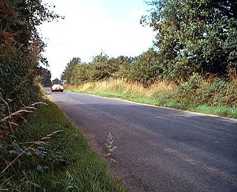 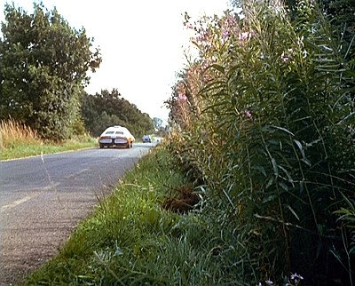
 Probably near Martyn
Cottage, Blackwell Hall Lane, Ley Hill used in A Question of Priorities.
Probably near Martyn
Cottage, Blackwell Hall Lane, Ley Hill used in A Question of Priorities.
M12: Aldenham Road, Letchmore Heath
U.F.O.: The Responsibility Seat (Alan Perry: September 1969)
Once he gets her in his car, Ed Straker gets the truth out Jo Fraser (Aldenham Road opposite Aldenham School).
(Identified by Greg Chapman, 16th March, 2021)
UFO: Court
Martial (Ron
Appleton: October 1969)
Ed Straker drives Alec Freeman, in his car, to Foster's appartment (Aldenham Road opposite Aldenham School).
(Identified by Greg Chapman, 16th March, 2021)


Elstree Road between Aldenham School and Aragon
UFO: A Question of Priorities (David Lane: August 1969)
U.F.O.: The Responsibility Seat (Alan Perry: September 1969)
Various shots of Ed Straker driving to and from S.H.A.D.O.
HQ. (reversed)
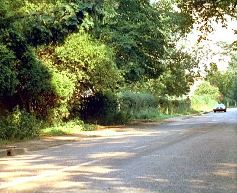 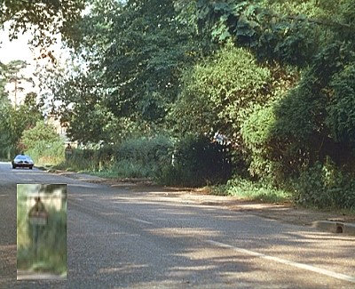
UFO: Court
Martial (Ron
Appleton: October 1969)
Straker
and Freeman drive past the gates on their way from Foster's flat.
UFO: Survival (Alan Perry: July 1969)
A SHADO car passes the gates driving in Elstree direction (reversed).
UFO: A Question of Priorities (David Lane: August 1969)
Ed Straker
drives his son home after a day taking him round the film studios.
UFO: The Responsibility Seat (Alan Perry: September 1969)
Straker
drives past after picking up Jo Fraser.
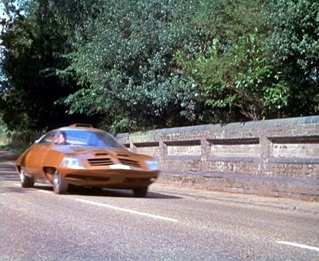 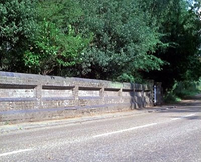
Unknown 5
UFO: A Question of Priorities (David Lane: August 1969)
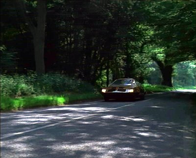 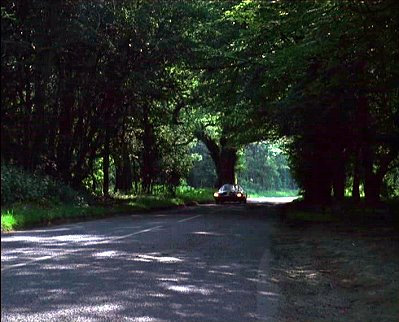
Unknown 6
UFO: The Psychobombs (Jeremy Summers: July 1970)
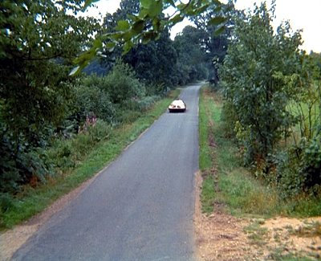 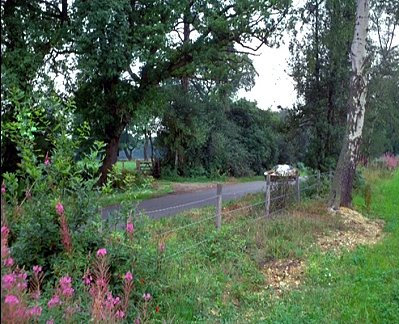 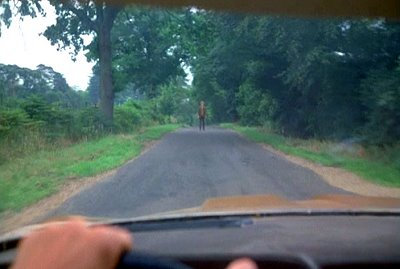
U.F.O.: Destruction (Ken Turner, 1970)
Ed Straker
(Ed Bishop) and Colonel Paul Foster (Michael Billington)
have a game of golf. Straker tells Foster to
investigate the recent sighting of a ufo by
a British navy vessel.
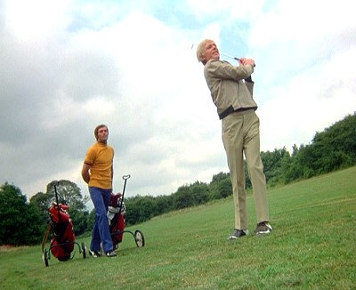 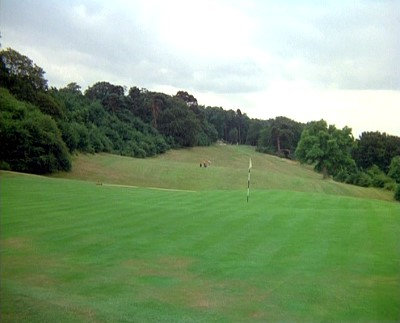 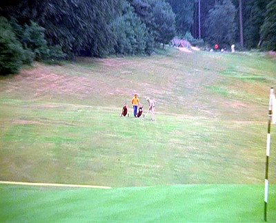
 This is Pinewood based episode.
This is Pinewood based episode.
Think you know a spot? Need a bigger image? Email me.
< Previous | Index | Avengerland | Next >
Copyright © 2003 Anthony R. McKay